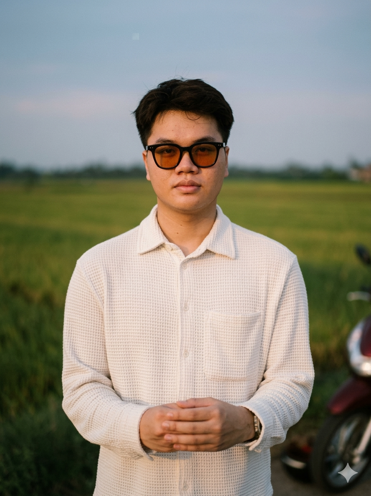

Our Story
Built to walk your story.
Câu chuyện về những bàn tay Việt, tạo nên đôi giày xứng đáng cho thế hệ tương lai.
Khám phá
Câu chuyện về những bàn tay Việt, tạo nên đôi giày xứng đáng cho thế hệ tương lai.
Tại sao những đôi giày do chính người Việt sản xuất,
lại chỉ xuất hiện trong những cửa hàng xa xỉ,
mang tên ngoại quốc, kể những câu chuyện xứ người?
Trong những nhà máy tại Việt Nam, những nghệ nhân lành nghề đã và đang tạo ra giày cho các thương hiệu danh tiếng nhất thế giới: Lacoste, Calvin Klein, MCM, G3.
Nhưng khi trẻ em Việt Nam đến trường, các em lại mang những đôi giày nhập khẩu giá cao, hoặc những đôi giày sản xuất hàng loạt, thiếu sự chăm chút cho đôi chân đang lớn.

Cùng đôi bàn tay. Cùng sự tỉ mỉ.
Cùng tiêu chuẩn chất lượng đẳng cấp quốc tế.

Theo học cùng lúc ba ngành Software Engineering, Business Administration và Law tại RMIT và ĐH Luật TP.HCM. Tyler sáng lập GIMI Café, M'nong Plateau Resort, và đồng sáng lập independent label 29Label.
Với tư duy brand strategy và khả năng biến creative concept thành hiện thực, Tyler mang đến Chrysa Doré tầm nhìn về một thương hiệu Việt đủ sức sánh ngang quốc tế.
Sản xuất OEM/ODM cho Lacoste, CK, MCM, G3 và nhiều thương hiệu quốc tế
Cùng dây chuyền, cùng kiểm soát chất lượng, cùng tiêu chuẩn xa xỉ quốc tế
Từ thiết kế, chọn nguyên liệu, sản xuất đến kiểm định chất lượng
"Chúng mình cũng từng là học sinh.
"
Chúng mình là nhà khởi nghiệp.
Và chúng mình muốn viết câu chuyện của riêng mình.
Mỗi bước chân nhỏ đều đáng được nâng niu.
Dual degree Law và Business Administration tại ĐH Luật TP.HCM, CEI Fellowship tại Fulbright Vietnam, và đang incubate startup tại VinUniversity Incubator.
1st Prize Startup Competition 2025 cấp thành phố, cultural startup partner của UNESCO, và strategic partner tại SIHUB. Kiệt tin rằng startup không chỉ là business, mà là tạo ra value cho cộng đồng từ chính bản sắc Việt.
Ở Hàn Quốc, học sinh tự hào chụp selfie với bộ đồng phục. Ở Nhật Bản, bộ Seifuku là biểu tượng văn hóa. Đồng phục không phải là gánh nặng. Đó là bản sắc.
Chrysa Doré tin rằng thẩm mỹ Việt Nam xứng đáng sánh đôi với bất kỳ cường quốc nào. Khi một học sinh nhìn xuống đôi giày và cảm thấy tự hào, cảm xúc ấy sẽ lớn dần theo năm tháng, trở thành sự tự tin, thành bản sắc văn hóa.
Nếu đồng phục học sinh nước mình cũng đẹp như vậy, mình sẽ tự hào lắm.

Đôi giày không chỉ bảo vệ đôi chân.
Đôi giày kể câu chuyện của người mang nó.
Mỗi thương hiệu lớn đều có một linh hồn. Chrysa Doré chọn một người bạn: chú thỏ Ember. Không phải mascot in trên bao bì, mà là người bạn bước cùng mỗi em nhỏ.
Như bước chân của các em trên sân trường
Không xa cách, không đáng sợ. Là một người bạn
Luôn đứng dậy sau mỗi lần vấp ngã, như các em
Ember là hòn than đang cháy, ấm áp và kiên định
"Mình sẽ cùng bạn trên mỗi bước chân. Có thể bạn sẽ vấp ngã, nhưng chẳng sao cả. Chúng mình sẽ cùng đứng lên, bước tiếp."
Chiếc lá bên cạnh Ember là lời hứa với hành tinh mà thế hệ này sẽ thừa kế. Mỗi lựa chọn nguyên liệu, mỗi quy trình sản xuất đều hướng đến sự bền vững.
Một đứa trẻ là một hạt giống đang lớn thành cây. Chúng mình nhìn thấy các bạn đang lớn lên, và chúng mình lớn lên cùng các bạn.
Chúng mình không tự nhận chất lượng. Chúng mình thừa kế nó. Cùng đôi tay tạo nên giày cho Lacoste và Calvin Klein.
Chúng mình cũng từng là học sinh. Chúng mình nhớ cảm giác muốn một đôi giày đẹp hơn, thoải mái hơn, đáng tự hào hơn.
Thẩm mỹ Việt xứng đáng sánh ngang với Hàn, Nhật, châu Âu. Không bằng lời nói, mà bằng sản phẩm.
Ember đi cùng bạn trên mỗi bước chân. Đôi giày không chỉ là phụ kiện, mà là người bạn thân nhất.
Chiếc lá không phải trang trí. Sản xuất xanh, nguyên liệu bền vững, vì thế hệ sẽ thừa kế trái đất.